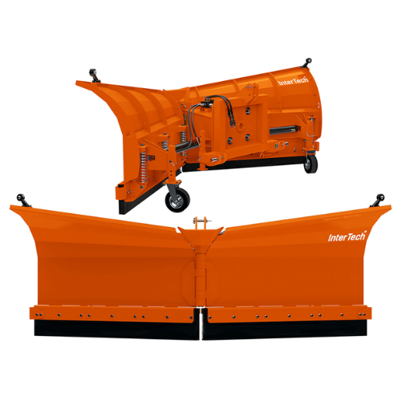

Komunální technika
Šípová radlice na sníh PSSHV-01
Není skladem
od 103 500 KčCena uvedena bez DPH
- Montáž a servis zajistíme
- Dodání po celé ČR
- info@agripol.cz
Popis
- OPV04 | šířka: 2,50m | výška: 1,1m | váha: 630kg |
- cena:103 500Kč
- OPV05 | šířka: 3,15m | výška: 1,1m | váha: 690kg |
- cena: 107 500Kč
- OPV06 | šířka: 3,60m | výška: 1,1m | váha: 710kg |
- cena:117 000Kč
- OPV07 | šířka: 4,00m | výška: 1,1m | váha: 745kg |
- cena: 127 000Kč
-
- V základní ceně:
- typ závěsu Euro nebo TBZ, kat II
- osvětlení
- odpružený břit
- příčné kopírování terénu
- opěrná kola výškovš stavitelná
- hydraulické zabezpečení proti přetížení náklonu křídel
- ovládání
- Příplatková výbava :
- břit železný cena 3 300kč
- břit polyuretanový , cena 8 000kč
- uchycení pro manupulátor , cena 6 000kč
- k pluhům vystavujeme technické osvětlení
Hydraulický pluh PSSHV-01 je nezbytným nástrojem pro odklízení sněhu z tvrdého i měkkého povrchu vozovky. Díky pevné konstrukci a inovativnímu designu funguje perfektně i v náročných zimních podmínkách. Disponuje dvěma nezávisle ovládanými odhrnovači, což umožňuje přesné odklízení sněhu v různých oblastech. Díky funkci laterálního sledování terénu se dokonale přizpůsobí nerovnostem. Mechanismus čepele chrání před překážkami a zvyšuje bezpečnost práce. Pluh je lehký, ale pevný a snadno pracuje s traktory a teleskopickými nakladači. Dodává se v šířkách od 2,5 do 4,0 m a zajišťuje efektivní odklízení sněhu na různých površích. Pluh vyžaduje traktor s výkonem minimálně 80 HP. Navíc je volitelně k dispozici ocelová nebo polyuretanová čepel.
Mohlo by vás zajímat